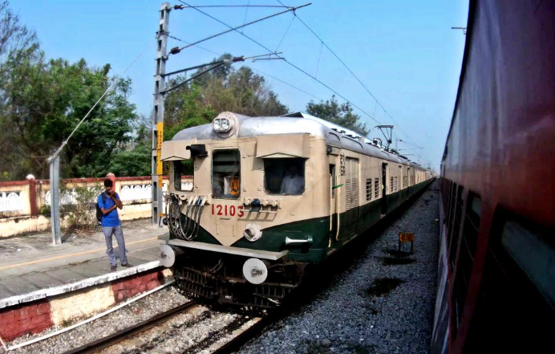

Nathapettai Railway Station (station code: NTT) is a small but significant stop located near Kaliyanoor in the Kanchipuram district of Tamil Nadu, India. It serves the town of Nathapettai and its surrounding areas, providing connectivity to various destinations. Nathapettai station is part of the Chennai Suburban Railway network, specifically on the South West Line that extends from Chennai Beach through Tambaram and Chengalpattu towards Arakkonam. It accommodates various types of trains.